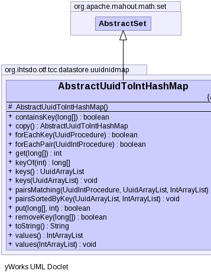

public abstract class AbstractUuidToIntHashMap
extends org.apache.mahout.math.set.AbstractSet
|  |
| Modifier | Constructor and Description |
|---|---|
protected |
AbstractUuidToIntHashMap()
Makes this class non instantiable, but still let's others inherit from it.
|
| Modifier and Type | Method and Description |
|---|---|
boolean |
containsKey(long[] key)
Returns true if the receiver contains the specified key.
|
AbstractUuidToIntHashMap |
copy()
Returns a deep copy of the receiver; uses
clone() and casts the result. |
abstract boolean |
forEachKey(UuidProcedure procedure)
Applies a procedure to each key of the receiver, if any.
|
boolean |
forEachPair(UuidIntProcedure procedure)
Applies a procedure to each (key,value) pair of the receiver, if any.
|
abstract int |
get(long[] key)
Returns the value associated with the specified key.
|
long[] |
keyOf(int value)
Returns the first key the given value is associated with.
|
UuidArrayList |
keys()
Returns a list filled with all keys contained in the receiver.
|
void |
keys(UuidArrayList list)
Fills all keys contained in the receiver into the specified list.
|
void |
pairsMatching(UuidIntProcedure condition,
UuidArrayList keyList,
org.apache.mahout.math.list.IntArrayList valueList)
Fills all pairs satisfying a given condition into the specified lists.
|
void |
pairsSortedByKey(UuidArrayList keyList,
org.apache.mahout.math.list.IntArrayList valueList)
Fills all keys and values sorted ascending by key into the specified lists.
|
abstract boolean |
put(long[] key,
int value)
Associates the given key with the given value.
|
abstract boolean |
removeKey(long[] key)
Removes the given key with its associated element from the receiver, if present.
|
String |
toString()
Returns a string representation of the receiver, containing the String representation of each key-value
pair, sorted ascending by key.
|
org.apache.mahout.math.list.IntArrayList |
values()
Returns a list filled with all values contained in the receiver.
|
void |
values(org.apache.mahout.math.list.IntArrayList list)
Fills all values contained in the receiver into the specified list.
|
protected AbstractUuidToIntHashMap()
public boolean containsKey(long[] key)
public AbstractUuidToIntHashMap copy() throws CloneNotSupportedException
clone() and casts the result.CloneNotSupportedExceptionpublic abstract boolean forEachKey(UuidProcedure procedure)
procedure - the procedure to be applied. Stops iteration if the procedure returns false,
otherwise continues.public boolean forEachPair(UuidIntProcedure procedure)
forEachKey(UuidProcedure).procedure - the procedure to be applied. Stops iteration if the procedure returns false,
otherwise continues.public abstract int get(long[] key)
#containsKey(double) whether the given key has a value associated or not, i.e. whether there
exists an association for the given key or not.key - the key to be searched for.public long[] keyOf(int value)
#containsValue(int) whether there exists an association from a key to this value. Search order
is guaranteed to be identical to the order used by method forEachKey(UuidProcedure).value - the value to search for.public UuidArrayList keys()
forEachKey(UuidProcedure). This method can be used to iterate over the keys of the receiver.
public void keys(UuidArrayList list)
forEachKey(UuidProcedure). This method can be used to iterate over the keys of the receiver.
list - the list to be filled, can have any size.public void pairsMatching(UuidIntProcedure condition, UuidArrayList keyList, org.apache.mahout.math.list.IntArrayList valueList)
forEachKey(UuidProcedure). Example:
UuidIntProcedure condition = new UuidIntProcedure() { // match even values only
public boolean apply(double key, int value) { return value%2==0; }
}
keys = (8,7,6), values = (1,2,2) --> keyList = (6,8), valueList = (2,1)
condition - the condition to be matched. Takes the current key as first and the current value as
second argument.keyList - the list to be filled with keys, can have any size.valueList - the list to be filled with values, can have any size.public void pairsSortedByKey(UuidArrayList keyList, org.apache.mahout.math.list.IntArrayList valueList)
Example:
keys = (8,7,6), values = (1,2,2) --> keyList
= (6,7,8), valueList = (2,2,1)
keyList - the list to be filled with keys, can have any size.valueList - the list to be filled with values, can have any size.public abstract boolean put(long[] key,
int value)
key - the key the value shall be associated with.value - the value to be associated.public abstract boolean removeKey(long[] key)
key - the key to be removed from the receiver.public String toString()
public org.apache.mahout.math.list.IntArrayList values()
forEachKey(UuidProcedure). This method can be used to iterate over the values of the receiver.
public void values(org.apache.mahout.math.list.IntArrayList list)
forEachKey(UuidProcedure). This method can be used to iterate over the values of the receiver.
list - the list to be filled, can have any size.Copyright © 2013 International Health Terminology Standards Development Organisation. All rights reserved.